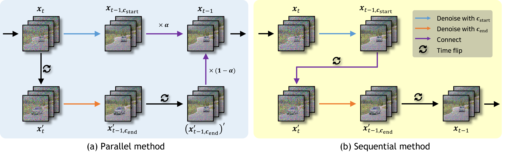
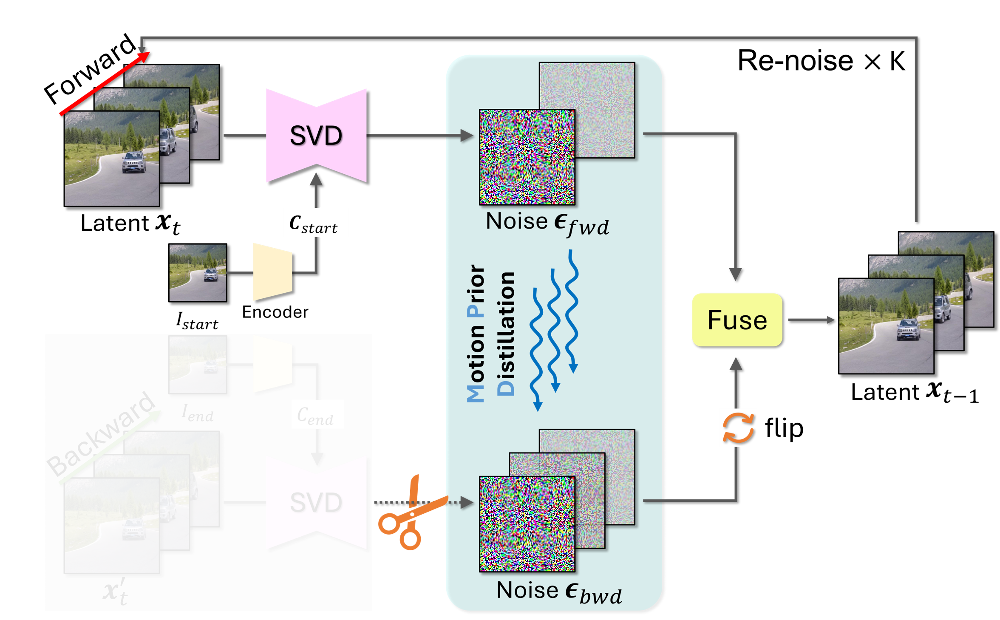

Motion Prior Distillation in Time Reversal Sampling for Generative Inbetweening
Abstract
Recent progress in image-to-video (I2V) diffusion models has significantly advanced the field of generative inbetweening, which aims to generate semantically plausible frames between two keyframes. In particular, inference-time sampling strategies, which leverage the generative priors of large-scale pre-trained I2V models without additional training, have become increasingly popular. However, existing inference-time sampling, either fusing forward and backward paths in parallel or alternating them sequentially, often suffers from temporal discontinuities and undesired visual artifacts due to the misalignment between two generated paths. This is because each path follows the motion prior induced by its own conditioning frame. We thus propose Motion Prior Distillation (MPD), a simple yet effective inference-time distillation technique that suppresses bidirectional mismatch by distilling the motion residual of the forward path into the backward path. MPD alleviates the misalignment by reconstructing the denoised estimate of the backward path from distilled forward motion residual. With our method, we can deliberately avoid denoising end-conditioned path which causes the ambiguity of the path, and yield more temporally coherent inbetweening results with the forward motion prior. Our method can be applied to off-the-shelf inbetweening works without any modification of model parameters. We not only perform quantitative evaluations on standard benchmarks, but also conduct extensive user studies to demonstrate the effectiveness of our approach in practical scenarios.
Method


Baseline Comparisons
Qualitative results across DAVIS and Pexels datasets. Click a scene below to compare methods.
BibTeX
@inproceedings{
jeon2026motion,
title={Motion Prior Distillation in Time Reversal Sampling for Generative Inbetweening},
author={Wooseok Jeon and Seunghyun Shin and Dongmin Shin and Hae-Gon Jeon},
booktitle={The Fourteenth International Conference on Learning Representations},
year={2026},
url={https://openreview.net/forum?id=GRElsj9W2t}
}